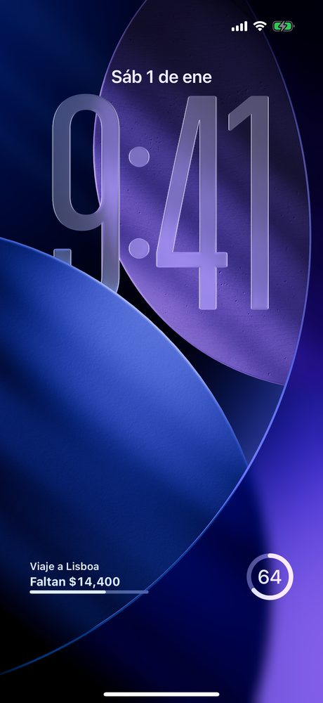
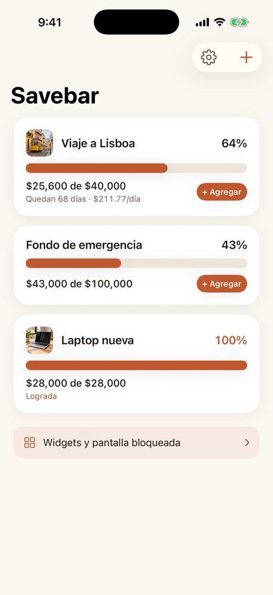

Toca + en el widget cuando apartes dinero. Pon una fecha para ver cuánto ahorrar al día.
Aparta algo de dinero, toca un botón de cantidad como +10 € en el widget y mira cómo avanza la barra.
Lo que quieres conseguir, en tu pantalla de inicio. El widget pequeño es gratis: una meta, su barra de progreso y un botón que añade la cantidad que elijas sin abrir la app.

Mira cómo tu meta se acerca cada día.Pro Widgets de la pantalla de bloqueo: un anillo con tu porcentaje, lo que te falta y una vista de una línea.
Añade a una meta desde la muñeca.Pro Los mismos botones de cantidad que el widget, más complicaciones para la esfera del reloj.
Añade una foto de lo que quieres conseguir: el widget pequeño la muestra en grande. Guarda algo de una tienda en Safari —o con el botón Compartir— como meta, con su foto, nombre y precio.
Con una fecha: cuántos días quedan y cuánto apartar al día. Cada ingreso queda en un historial que puedes editar o eliminar.

Sin anuncios. Sin cuenta.
Compra única, sin suscripción.
Sin anuncios, sin suscripciones. Pro es una compra única.
Sin conexión con el banco, sin cuenta, sin suscripción.
English · 日本語 · 简体中文 · 繁體中文 · 한국어 · Deutsch · Français · Español · Italiano · Nederlands · Polski · Português · Русский · ไทย · Türkçe · Українська · Tiếng Việt · Bahasa Indonesia